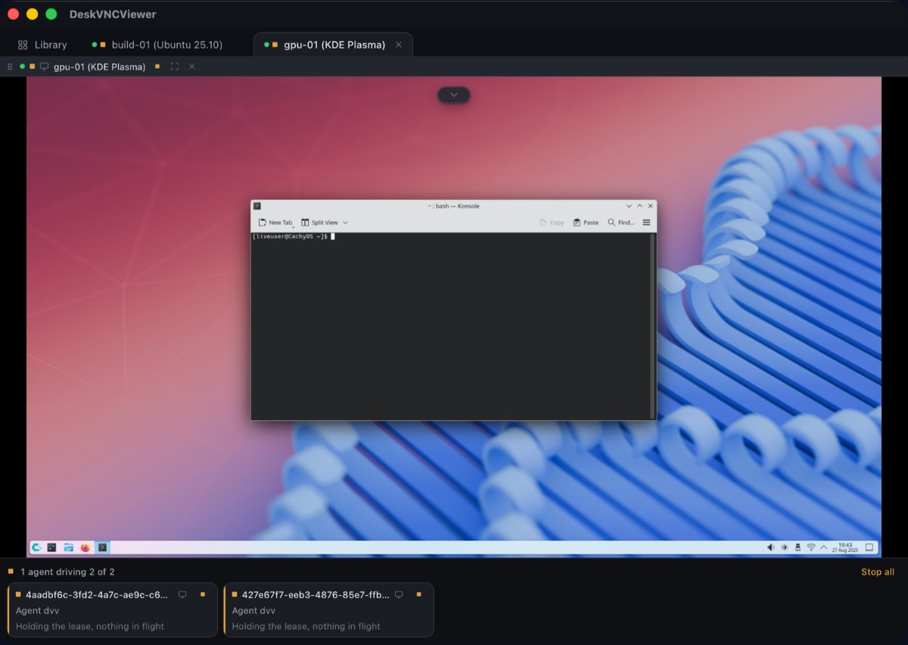

VNC, RDP and SSH in one native client
Let an agent drive your remote desktops, and take the wheel back at any moment
DeskVNC is a desktop client written in Rust on Tauri 2 that runs on Windows, macOS and Linux. It holds your saved machines, their credentials and their sessions. It also ships dvv, an agent control plane that hands an AI agent those same connections.
What MCP isThe Model Context Protocol, or MCP, is a standard way for an AI agent to call tools inside another program, so it can act in your software rather than only talk about it. dvv is that kind of server, and it speaks about your machines.
Agent plane, measured
- Observe then act cycle
- 19 ms
- Actions per second that implies
- 52 /s
dvv_openand attach- 4 ms
- Screen at
scale: 0.25 - 25 ms
- Installed on the target
- none
Measured by the project on a real 1920x1080 Windows desktop over a LAN. The full table and the methodology.
Open a machine, look at the screen, click and type
The agent works over the ordinary VNC, RDP or SSH connection you already have open. Nothing is installed on the remote machine, because the connection is the one that machine already speaks. Input travels over the protocol to the far end, so the viewer can be minimised while the work carries on.
-
Reads a real desktop
dvv_screenreturns the framebuffer as an image with the size, the geometry generation and an image space beside it, which is what turns a point you pick on the picture into a coordinate on the remote machine. -
Acts on it
dvv_click,dvv_typeanddvv_keysend real pointer and keyboard events. A keystroke follows the remote keyboard layout, so CJK input methods and dead keys arrive intact. -
Moves files and text
dvv_filestransfers over the machine's own SFTP channel, anddvv_clipboardputs text on the remote clipboard in one message instead of hundreds of key events. -
Works on SSH terminals
dvv_term_sendwrites to a PTY, anddvv_runruns a command on a channel of its own and returns its stdout, its stderr and the exit status the far side reported. -
Runs several machines at once
Every machine is its own limb with its own lease, so ten machines are ten independent loops.
dvv_group_openreturns a group id anddvv_group_runacts on every member concurrently. -
Hands over to a person
Click into the pane and the agent is fenced out of that session. Held keys and buttons are released as it goes, so a half finished drag cannot strand the desktop, and one click hands it back.

Every call, with its arguments, is served by the server itself: dvv answers the initialize handshake with its own instructions and returns the full schema for every tool on request. Guide 3 walks the loop end to end.
From download to an agent holding the wheel
Three steps and four commands. Everything below is real syntax taken from the shipped binaries.
-
Step 01
Install it
macOS is signed and notarised, the Windows installer is signed, and Linux ships as a
.deb, an.rpmand an AppImage. The page links the build for your platform by name. -
Step 02
Save a machine
Open the app and press New Host, or paste an address into the bar at the top and press Connect. Addresses read the way you already think of them.
-
Step 03
Turn the plane on
Switch the agent plane on in the AI Agents panel, then register
dvvwith your agent. The panel also has a button that does the Claude Code registration for you.
Register dvv with Claude Code
claude mcp add deskvnc -- /Applications/DeskVNCViewer.app/Contents/MacOS/dvv mcp --stdioOr with OpenCode
Put this in opencode.json, at the project root or in ~/.config/opencode/opencode.json.
{
"$schema": "https://opencode.ai/config.json",
"mcp": {
"deskvnc": {
"type": "local",
"command": ["/Applications/DeskVNCViewer.app/Contents/MacOS/dvv", "mcp", "--stdio"],
"enabled": true
}
}
}For any other client, dvv prints the exact line for it:
dvv doctordvv setup writes the registration for OpenCode, Pi, Codex and Claude Code itself, keeping a backup and any comments in your config. dvv setup opencode, dvv setup pi, dvv setup codex and dvv setup claude do one agent each.
Ask for something, from a shell
The same surface is available as commands, for an agent that drives a shell rather than an MCP client, and for you at a terminal.
dvv hosts # the saved machines and their ids
dvv open front-desk --perceive # open one, with a screen mirror
dvv control acquire lmb_frontdesk # take the wheel
dvv screen lmb_frontdesk --scale 0.5 --out ./dvv-screen.png
dvv click lmb_frontdesk 700 400
dvv type lmb_frontdesk "notepad"
dvv key lmb_frontdesk ctrl+s
dvv close lmb_frontdeskOne window for every machine you look after
The agent plane is optional. The client around it is a working remote desktop tool: a saved host library with live thumbnails, tabs, split panes, credentials in the operating system keychain, clipboard and SFTP file transfer in both directions, reconnection after a drop, screenshots, fullscreen, view only, network discovery and Wake on LAN.
- 3 protocols VNC, RDP and SSH in one library, each core written rather than wrapped
- 3 platforms Windows, macOS and Linux, native on each
- RFB 3.3 to 3.8 VeNCrypt, RA2 and Apple authentication, continuous updates
- MIT or Apache-2.0 Dual licensed, free and open source
The VNC core is filed down against real servers including x11vnc, TigerVNC, QEMU, RealVNC and macOS Screen Sharing. The RDP core covers Windows desktops with NLA, RemoteApp, resolution control and the usual codecs. The SSH core gives a terminal that survives a drop, SFTP transfers, tunnels and PuTTY key files.
The material to act on
-
Guides
Installing on Windows, macOS and Linux, registering the MCP server, the four call loop, file transfer, clipboard, SSH terminals, several machines at once, the keychain, discovery and Wake on LAN. Copy and paste.
-
Use cases
Machines that refuse installed agents, an agent that needs to read a screen and act, one window for a mixed estate, and remote support where a person takes the wheel back mid task.
-
Benchmarks
The measured numbers, the machine they were measured on, and what each one means for a loop you intend to run.
-
The official project page
Maintained by the project itself, with the screenshots, the feature tour and the release notes.
Everything here
Generated from what is actually published, so this list cannot go stale.
- Home The hub index and the short version of the argument.
Start here
- Benchmarks: 19 ms from screen to action on a real desktop Measured agent plane performance for DeskVNC: 19 ms per observe then act cycle, 4 ms to open and attach, under
- Guides: driving VNC, RDP and SSH machines with an AI agent Step by step DeskVNC guides: install on Windows, macOS and Linux, register the dvv MCP server with Claude Code
- DeskVNC MCP endpoint: let any AI agent learn to drive a real desktop A hosted read-only MCP server with verified DeskVNC facts. Any MCP client can connect and get the exact dvv to
- Use cases: what an agent driven remote desktop is for DeskVNC in practice: Citrix, VDI, jump hosts and client owned desktops that refuse installed agents, an agent
The argument
- Two kinds of desktop automation, and what each one inherits There are two fundamentally different ways to automate a desktop. The first is to install software on the desk
- One client, three protocols, three operating systems Most remote desktop clients wrap somebody else
- The loop that does not blink: how an agent drives a real desktop The shape that decides whether an agent can drive a real machine is a single idea, and it has almost nothing t
- Machines that refuse an installed agent !Two paths to the same machine: an agent that installs itself on the endpoint is refused by policy, and an age
- The human in the loop, at machine speed There is an apparent contradiction in letting an AI agent drive a real desktop, and the contradiction is the r
Reference
- Protocol glossary for remote desktop and MCP The words below are the ones a developer reaches for when reading the DeskVNC source, the docs for the protoco
- How the DeskVNC agent benchmark was measured A benchmark number without a method is a slogan. A number with a method is a fact. This page is the method beh
- When the agent cannot drive the machine: a symptom-first decision tree You set up dvv, your agent is in the loop, and something refuses to do what you asked. Most refusals are not t
MCP clients
- Registering DeskVNC with Claude Code Claude Code is Anthropic
- Registering DeskVNC with Codex CLI Codex CLI is OpenAI
- Registering DeskVNC with Cursor Cursor is the AI code editor that reads a project-scoped MCP config. Pairing it with DeskVNC
- Registering DeskVNC with Gemini CLI Gemini CLI is Google
- Registering DeskVNC with OpenCode OpenCode is the open source terminal agent that reads a project-scoped opencode.json. It speaks the Model Cont
- Registering DeskVNC with Visual Studio Code Visual Studio Code is the editor most teams already have open, and it speaks the Model Context Protocol. Pairi
Other languages
- DeskVNC: AIエージェントによるリモートデスクトップ操作 RDP での接続しか許さない Citrix ファーム。新しいサービスを一切受け付けない踏み台サーバー。標準のリモート支援ツールだけをホワイトリストに入れている、顧客所有のノートパソコン。一見するとばらばらの三台ですが、た
- DeskVNC: 让 AI 智能体驱动真实远程桌面 一台只允许你用 RDP 连进去的 Citrix 农场,一台不允许任何新服务的堡垒机,一台客户自己拥有、只让标准远程协助工具白名单放行的笔记本。它们看上去全然不同,却在一件事上态度一致:被控端不允许安装任何新的运行体。